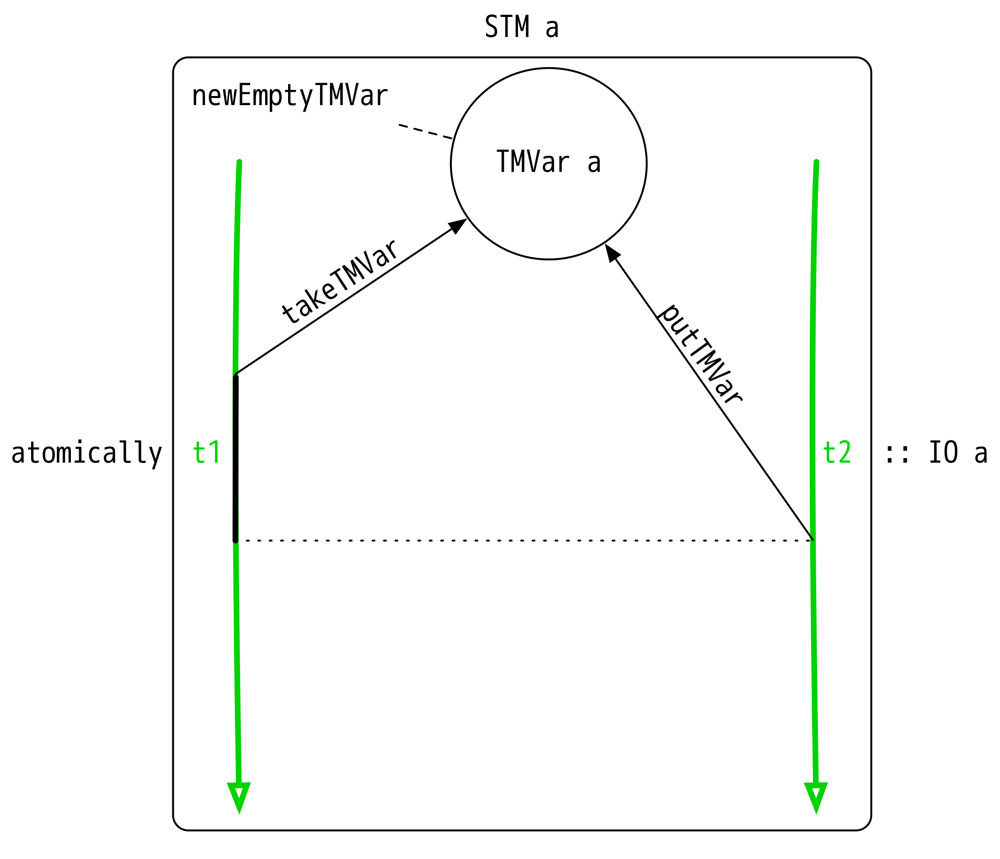

There are quite a few ways to store mutable data in Haskell. Let’s talk about some of them! Specifically, we will focus on mutable containers that store a single value that can be modified by one or more threads at any given time.
I’m not going to go into a ton of detail here - I just want to give an overview. I have provided links to the documentation and other resources at the end of each section for further reading.
First up is IORef, the simplest of all containers. It is a sectioned off bit of mutable memory for any number of threads to read/modify willy-nilly.
We can read this diagram as follows:
IO monad/context.IORef was created in IO somewhere and provided to two threads: t1 and t2.t1 writes a value to the IORef using writeIORef :: IORef a -> a -> IO at2 writes a value to the same IORef.t1 reads the IORef using readIORef :: IORef a -> IO aThe following diagrams will follow the same general struture: time increases as we move downwards along a thread, and certain actions are taken within those threads.
IORefs are not very safe. They are highly succeptible to race conditions and other unintended behavior, and should be used with caution. For example, in our diagram: t2 modifies the IORef after t1 wrote to it - t1 probably expected that readIORef would return whatever it placed there. That is not the case, because t2 modified it between the write and read steps of t1.
MVars represent a location in memory that holds a value as well. However, MVars come with the guarantee that no two threads are modifying a variable at the same time.
An MVar is either empty or full of an a. When we try to takeMVar on an empty MVar, the current thread blocks (indicated by a black line) until a value is put back into the MVar. GHC’s runtime is pretty good at determining when a thread is blocked indefinitely on an MVar read, so we don’t often have to worry about a thread hanging due to a bad program (for too long).
MVars are still succeptible to race conditions, but are great for simple concurrent tasks like synchronization and basic communication between threads.
TVars solve a different problem. They are associated with a mechanism called Software Transactional Memory - STM - - a construct that allows us to compose primitive operations and run them sequentially as a transaction. Think database transaction: if one STM action in a chain fails, all previous actions taken in that chain are rolled back accordingly.
TVars have a similar API to MVar, with one major difference: They can’t ever be empty. TVars can only be used in a singular thread, which is commonly executed as an atomic transaction using the function atomically :: STM a -> IO ().
STM provides a bunch of very useful primitives for working with transactions, and is worth exploring:

This diagram should look pretty familiar! TMVars are a mash between TVars and MVars, as you might expect from its name. They can be composed transactionally just like TVars, but can also be empty, and shared across many threads.
Since all of these TMVar actions live in STM, they can be run in the same manner as when we use regular TVars.
STRefs are a completely different type of mutable container. They are restricted to a single thread, much like TVars, but guarantee that they never escape (they are thread-local). They live in a context called ST, indicating a stateful thread.
The s value in the type of ST and STRef is a reference to the thread that the ST computation is allowed to access.
ST and STRefs are mainly used to gain performance when you need to be closer to memory, but don’t want to give up safety.
Til next time!
Ben